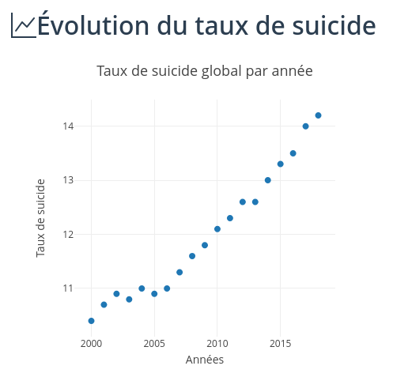
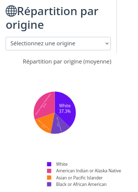

Analyse des indicateurs
Cette page propose une analyse approfondie des principaux indicateurs liés au suicide aux États-Unis entre 2000 et 2018.
1. Evolution du taux de suicide (2000-2018)

Analyse de l'évolution temporelle
L'analyse du taux de suicide global aux États-Unis entre 2000 et 2018 révèle une tendance à la hausse significative, particulièrement prononcée à partir de 2007-2008, coïncidant avec la crise économique mondiale.
On observe trois phases distinctes :
- 2000-2006 : Le taux reste assez stable, avec environ 10 à 11 cas pour 100 000 habitants.
- 2007-2014 : Accélération progressive avec une augmentation annuelle de 2% en moyenne
- 2015-2018 : L'augmentation se fait plus marquée et le taux dépasse 14 cas pour 100 000 habitants.
Augmentation de près de 30% du taux de suicide sur l'ensemble de la période, signalant une crise de santé publique majeure nécessitant des interventions ciblées.
2. Variations annuelles
Analyse des variations
L'analyse du graphique d'évolution du taux de suicide repose sur la formule suivante :
Variation (%) = [(Taux de l'année actuelle – Taux de l'année précédente) / Taux de l'année précédente] × 100.
Cette approche met en lumière les variations annuelles en pourcentage. Les barres positives indiquent une augmentation du taux de suicide par rapport à l'année précédente, tandis que les barres négatives traduisent une baisse relative.
Ces fluctuations, qu'elles soient ascendantes ou descendantes, peuvent refléter l'impact de facteurs socio-économiques ou l'influence des politiques de santé publique mises en œuvre au fil du temps.

3. Disparités entre hommes et femmes

Analyse des différences de genre
La répartition par sexe révèle une disproportion significative entre hommes et femmes. Les hommes représentent approximativement 75-80% des suicides, un ratio qui reste relativement stable sur la période étudiée.
Cette disparité peut s'expliquer par plusieurs facteurs :
- Les méthodes utilisées, généralement plus létales chez les hommes
- Les différences dans les comportements de recherche d'aide et d'expression de la détresse psychologique
- Les pressions socioculturelles liées aux rôles de genre
Bien que les tentatives de suicide soient plus nombreuses chez les femmes, le taux de suicide accompli est significativement plus élevé chez les hommes, soulignant la nécessité d'approches de prévention différenciées.
4. Vulnérabilité selon les tranches d'âge
Analyse démographique
L'analyse par tranche d'âge montre que certains groupes sont particulièrement vulnérables. Les données révèlent que les personnes d'âge moyen (45-64 ans) et les personnes âgées (65+ ans) présentent généralement les taux les plus élevés.
Cependant, l'évolution la plus préoccupante concerne les jeunes (15-24 ans) et les jeunes adultes (25-44 ans), qui ont connu les augmentations les plus importantes en termes de pourcentage sur la période étudiée.
Cette tendance chez les plus jeunes pourrait être liée à l'augmentation de l'utilisation des réseaux sociaux, l'isolement social, les pressions académiques et professionnelles accrues, ainsi que l'accès limité aux services de santé mentale.
L'augmentation de plus de 50% du taux de suicide chez les 15-24 ans entre 2007 et 2018 constitue un signal d'alarme majeur pour les politiques de santé publique.

5. Disparités selon l'origine ethnique

Analyse des facteurs culturels et sociaux
La répartition par origine ethnique révèle des disparités importantes qui peuvent refléter des différences dans l'accès aux soins de santé mentale, le soutien communautaire, les facteurs économiques et les normes culturelles.
Les populations blanches non hispaniques présentent généralement les taux les plus élevés, suivies par les populations amérindiennes et autochtones d'Alaska, qui sont particulièrement touchées dans certaines régions.
Les populations afro-américaines, hispaniques et asiatiques présentent des taux significativement plus bas en moyenne, bien que des variations importantes existent au sein de ces groupes.
Ces différences soulignent l'importance de programmes de prévention culturellement adaptés et de recherches supplémentaires sur les facteurs protecteurs spécifiques à certaines communautés.
Conclusion et perspectives
L'analyse des données sur le suicide aux États-Unis entre 2000 et 2018 met en évidence une augmentation préoccupante du phénomène, avec des disparités importantes selon le sexe, l'âge et l'origine ethnique.
Ces résultats suggèrent la nécessité de:
- Renforcer les programmes de prévention ciblés pour les groupes les plus à risque
- Améliorer l'accès aux services de santé mentale, particulièrement dans les zones rurales et les communautés défavorisées
- Développer des approches spécifiques pour les hommes, qui sont moins susceptibles de chercher de l'aide
- Mettre en place des initiatives dédiées aux jeunes, notamment dans les milieux scolaires et universitaires
- Poursuivre la recherche sur les facteurs de risque et de protection spécifiques à chaque groupe démographique